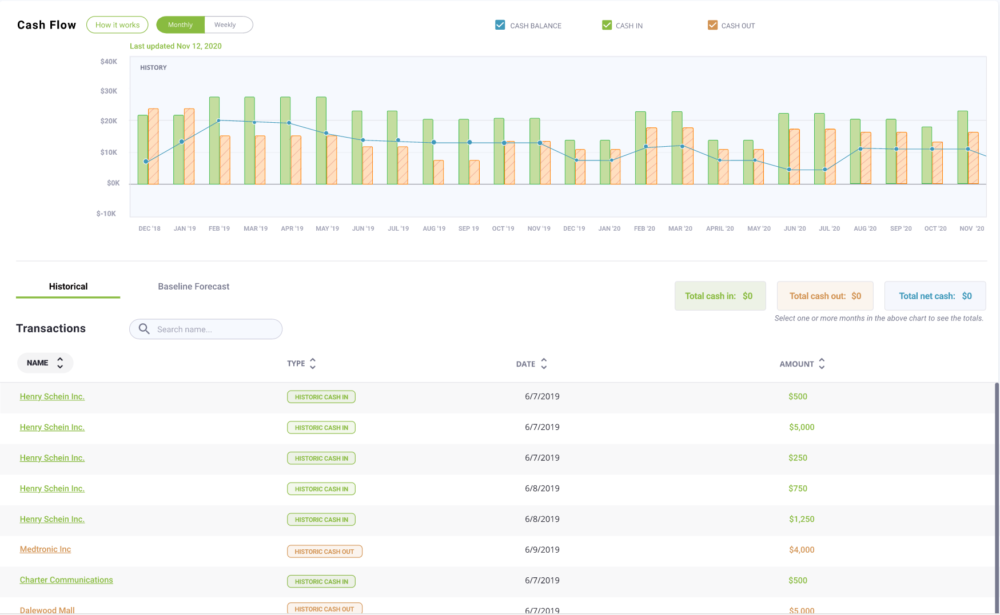

CashFlowTool Standard Forecasting Mode
Background
CashFlowTool is a cash flow management service aiming to help small business owners and accountants manage the cash flow of a business. The software offers various powerful features that analyze financial data to efficiently present current cash metrics, transactions, KPIs and forecast future cash activities.
After several version releases of CashFlowTool, the application got more and more usage as well as feedback from business professionals. From communications with our user base, the team learned that the then-current forecasting method did not sufficiently suit certain businesses’ unique situations. This called for a need for CashFlowTool to incorporate a functionality to address the various circumstances surrounding different types of businesses. After much consideration among the team and consultation from concerned users, we decided to add a new method of cash flow forecasting to CashFlowTool, which would produce more accurate cash flow forecasts for certain businesses. As a result, the CashFlowTool engineering team started an initiative to build a new forecasting algorithm, which eventually led to the development of CashFlowTool’s Standard Forecasting Mode.
With the addition of the Standard Forecasting Mode, there also came a need to create a user experience to accompany this. As Finagraph's lead UX designer, I led the design aspect of the Standard Forecasting Mode project, working alongside members from our sales, marketing, and engineering teams.
Process
Discovery
As CashFlowTool’s user base grew through a few years since the app’s initial release, our team has also been keeping a close eye on user engagement and satisfaction. This was how we first discovered the need to add another forecasting method, and eventually start working on the Standard Forecasting Mode. With the undergoing development of this feature, we increased user activity inspection and conducted discussions with several users who were having particular issues with CashFlowTool’s original forecasting method.
Through these efforts, we were able to pinpoint several issues with the app’s forecasting model. These include inaccuracies due to overgeneralization of circumstances and counterintuitive settings for customization.
As the team interpreted our observations, we deduced the findings into major goals for the user experience of the Standard Forecasting Mode. Our high level goals were to:
Offer more accurate forecasted data during the first-run experience
Make it intuitive for users to customize settings for their cash flow forecasts
Give users efficient ways to edit cash flow entries
Ideation & Execution
Journey map
To further understand the pain points during our customer’s experience and identify potential solutions, we created a user journey map for an archetypical user persona. The user journey map lays out the problems, emotions, and possibilities along the process of this user checking her business’s cash flow forecast, customizing and analyzing it.
By looking closer at the steps this user takes and what she experiences, the team explored potential solutions to major pain points. Based on the journey map, usability issues mainly resulted from complications in the user onboarding process and the complicated customization functionality for the cash flow forecast to suit each business’s own circumstances. With these findings in mind, the team had a much better vision of the solution.
The journey map also helped the team figure out an idea of internal ownership for the implementation of the Standard Forecasting Mode.

Sketching ideas
In the next step, the team met up for several whiteboarding sessions to create design visions and sketch rough drafts. These sessions helped us form a clearer picture of the user experience with the Standard Forecasting Mode.


User flow
The Standard Forecasting Mode also called for the need to facilitate an updated user flow. The team especially focused on the user onboarding experience within this flow, since it plays a major role in a user’s ability to adopt the new forecasting method and get familiar with its customization functionalities.

Prototype & user testing
After several iterations, we were able to create an MVP prototype and decided to test this out with existing CashFlowTool users to validate our assumptions and survey the potential user adoption of the new forecasting mode.
We ran 5 moderated user testing sessions with CashFlowTool users who were having issues with the original forecasting mode, including both business owners and accountants. During these sessions, we had participants carry out tasks during the onboarding flow and forecast customization process. As the participants went through the tasks, they were asked to think aloud their reactions and opinions about their experience, through which we were able to immerse ourselves in the users’ world and identify both strengths and shortcomings of our design.
Final design
Taking in feedback from the user testing of our MVP prototype, we went back to iterating on the design with high-fidelity mockups. With the final iteration, we presented the following major functionalities to the user experience of the Standard Forecasting Mode.
Key inflows and outflows
The Standard Forecasting Method introduces the concept of key inflows and key outflows. These are top customers and vendors or important revenue streams and expenses. We decided to incorporate this concept into the user experience to declutter the displayed data and help users focus on details that matter the most to their businesses.
Only the selected key inflows and outflows would be individually forecasted and displayed with details in the forecast data table. Everything else is calculated and listed as a lump sum. At any point, users have the ability to add a new key item, or remove one from the list of key items. This way, when modifying and analysing the forecasted data, users would not get overwhelmed by an influx of numbers, lots of which don’t have a major impact on their cash flow forecasts. They instead have the ability to choose only important relationships to look in close detail.
3-step forecast setup process
For the user onboarding experience, we decided to incorporate 3 steps to get users started with the Standard Forecasting Mode. This ensures users have a detailed introduction to the forecasting engine and how to customize the forecast to fit their businesses’ circumstances. Users are guided through a setup process of 3 steps: choosing a forecast period of either monthly/weekly, selecting key inflows, and selecting key outflows. By guiding users to curate their own settings for their cash flow forecasts at the very start, this experience also aims to use detailed customization to minimize unsatisfying results for the initially generated forecasts.


Data table interface
In the Standard Forecasting Mode, due to a difference in the forecast algorithm, we decided to split the cash flow forecast into 2 tabs: Historical Explorer and Baseline Forecast. Like the labels suggest, Historical Explorer displays all historical data from the past 12 months of the business’s cash flow, while Baseline Forecast shows only a few past data points for reference and focuses on the forecasted period.
The 2-tab interface allowed us to introduce a new visualization of forecasted data that fits better with the overall user experience in the Standard Forecasting Mode. The forecasted cash flow entries are now displayed as cells in a table, instead of individual rows like in CashFlowTool’s previous versions
The cells make it easier and faster to scan forecasted data and make edits. This interface is also close to the layout of a spreadsheet, which is largely familiar to business owners and accountants, hence making it easy for these users to adopt.
Pop-up edit window with autofill
An editor pops up everytime a cell is clicked on. Within this window, users see various autofill options that can help them quickly modify multiple cells within the row associated with a an inflow/outflow. This makes the process of editing much more efficient and manageable compared to the previous user flow.
Users also have the option to minimize this window into a top editing bar, if they need to take a clear thorough look at all data points.

Implementation, Outcome & Reflection
During the implementation process, I worked closely with our developers to make sure the design was properly integrated into the user interface and interaction of the Standard Forecast Method.
The Standard Forecasting Mode was released as a beta feature in April 2020. For differentiation, while the original forecasting mode was renamed as the Detailed Forecasting Mode. After the initial release, the team made sure to follow up with our users. Overall, we received majorly positive feedback from a range of users, especially those who had experienced problems with the original Detailed Mode. With the option to easily switch between 2 forecasting modes, many users expressed great excitement over the ability to choose the mode that best suited their business circumstances. Since all data including data modifications and customizations are reserved in each mode, users were glad they could try out the new Standard Mode to test out the functionalities without losing their original forecast setups.
With the new forecasting mode in place, we planned to keep a close eye on user adoption of the new Standard Mode and collect feedback through various channels. Since it’s still a beta feature, we would be adding iterations on both user experience and technology aspects to improve the Standard Mode through time. Eventually, based on both our business goals and user needs, we also saw potentials for an ultimate goal of unifying the two forecasting modes into one single coherent experience that satisfies various needs across different types of businesses.